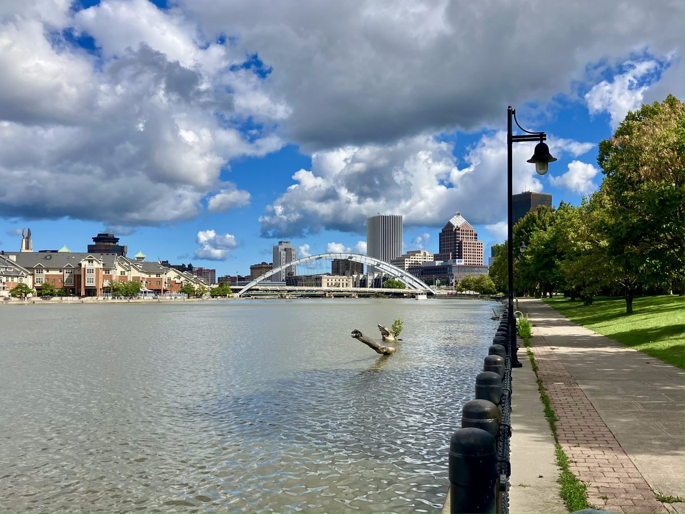

뉴욕주의회에 민간 전력회사 공공 매입 법안 계류…로체스터 공공 전력 운동, 지역 전력회사 공영화의 길로 삼으려

센트럴 허드슨을 채권으로 사들여 요금으로 갚는 방식…운동 단체는 공영 전력 요금이 13~63% 싸다고 주장, 카운티의회는 2024년 타당성 조사 예산 16 대 13 부결
투자자 소유 전력·가스회사를 주정부가 사들이게 하는 법안이 뉴욕주의회에 계류된 가운데, 로체스터의 공공 전력 운동이 이 법안을 지역 전력회사 공영화의 본보기로 삼으려 하고 있다. 법안을 낸 허드슨밸리 지역구의 사라하나 슈레스타 주 하원의원(민주당)은 지난주 브루클린의 치 오세 뉴욕시의원과 함께 로체스터를 찾아, 지역 단체 메트로 저스티스와 미국민주사회주의자(DSA) 로체스터 지부가 연 행사에서 전력회사 공공 소유 방안을 설명했다. 법안은 허드슨밸리에 전기·가스를 공급하는 센트럴 허드슨 가스앤일렉트릭을 주정부가 채권을 발행해 사들이고 그 빚을 요금으로 갚게 하는 내용으로, 슈레스타 의원은 이렇게 하면 요금이 내려간다고 주장하지만 회사 측은 반대 뜻을 밝혔고 법안은 아직 상임위원회에 머물러 있다. 로체스터 지지자들은 타당성 조사와 주민투표를 거쳐 지역 전력회사 로체스터 가스앤일렉트릭(RG&E)을 카운티 정부가 맡는 길을 바라지만, 먼로 카운티의회는 2024년 타당성 조사 예산 100만 달러 안을 16 대 13으로 부결했다. 올해 5월 주 공공서비스위원회가 RG&E의 가정용 전기요금 2.9%, 가스요금 1.2% 임시 인상을 허가한 데다, 2020년 미국에너지효율경제위원회(ACEEE) 연구에서는 로체스터 가구의 29%가 소득의 6% 넘게 에너지 요금으로 쓰는 것으로 나타났다. 메트로 저스티스의 캠페인 '로체스터 에너지민주주의'는 미국 전력회사 3,200곳 가운데 3분의 1 가까이가 공공 소유이며 이들의 요금이 투자자 소유 회사보다 13~63% 싸다고 주장한다.
시민에너지 관점
가구 열에 셋 가까이가 소득의 6% 넘게 에너지 요금으로 쓰는 도시에서 요금 인상이 이어진다면, 전력회사를 누가 소유하느냐는 이념이 아니라 생활비의 문제가 된다. 공공이 사들이면 빚이 늘고 경영이 서툴러진다는 우려가 있지만, 독일 남부 쇠나우 주민들은 주민투표를 거쳐 마을 전력망을 직접 사들인 뒤 협동조합 전력회사로 키웠고, 미국 캘리포니아주 새크라멘토에서는 주민 투표로 세운 공영 전력회사 SMUD가 지금도 도시에 전기를 공급한다. 전력회사가 주주 배당이 아니라 요금을 내는 주민에게 책임을 지려면, 주민이 소유와 결정에 직접 참여하는 구조가 필요하다. 국내에서도 에너지 공기업과 지역 발전소에 주민이 지분과 의결권으로 참여하는 시민 공공 소유의 길을 정식 논의에 올려야 한다.
출처: Rochester Beacon 2026-10-27 David Wazana 원문 보기
ニューヨーク州議会に民間電力会社の公的買収法案…ロチェスターの公営電力運動、地元電力会社の公営化への道に
セントラル・ハドソンを債券で買い取り料金で返済する方式…運動団体は公営電力の料金が13～63%安いと主張、郡議会は2024年に事業化調査予算を16対13で否決
投資家が所有する電力・ガス会社を州政府が買い取れるようにする法案がニューヨーク州議会で審議待ちとなる中、ロチェスターの公営電力運動がこの法案を地元電力会社の公営化の手本にしようとしている。法案を提出したハドソンバレー選出のサラハナ・シュレスタ州下院議員（民主党）は先週、ブルックリンのチ・オセ・ニューヨーク市議と共にロチェスターを訪れ、地元団体メトロ・ジャスティスとアメリカ民主社会主義者（DSA）ロチェスター支部が開いた催しで、電力会社の公的所有の構想を説明した。法案は、ハドソンバレーに電気とガスを供給するセントラル・ハドソン・ガス・アンド・エレクトリックを州政府が債券を発行して買い取り、その負債を料金で返済する内容で、シュレスタ氏は料金が下がると主張するが、会社側は反対の意向を示しており、法案はまだ委員会にとどまっている。ロチェスターの支持者は、事業化調査と住民投票を経て地元電力会社ロチェスター・ガス・アンド・エレクトリック（RG&E）を郡政府が担う道を望んでいるが、モンロー郡議会は2024年、事業化調査予算100万ドルの案を16対13で否決した。今年5月には州公益事業委員会がRG&Eの家庭用電気料金2.9%、ガス料金1.2%の暫定値上げを認めており、2020年の米国エネルギー効率経済評議会（ACEEE）の研究では、ロチェスターの世帯の29%が所得の6%超をエネルギー料金に充てていることが示された。メトロ・ジャスティスのキャンペーン「ロチェスター・エネルギー民主主義」は、米国の電力会社3,200社のうち3分の1近くが公営で、その料金は投資家所有の会社より13～63%安いと主張している。
市民エネルギーの視点
世帯の3割近くが所得の6%超をエネルギー料金に充てている都市で値上げが続くなら、電力会社を誰が所有するかは理念ではなく生活費の問題になる。公的に買い取れば借金が増え経営も下手になるとの懸念もあるが、ドイツ南部シェーナウの住民は住民投票を経て村の電力網を自ら買い取り、協同組合の電力会社に育て、米カリフォルニア州サクラメントでは住民投票でつくった公営電力会社SMUDが今も市に電気を供給している。電力会社が株主への配当ではなく料金を払う住民に責任を負うためには、住民が所有と意思決定に直接参加する仕組みが必要だ。韓国でも、エネルギー公企業や地域の発電所に住民が持ち分と議決権で参加する市民による公的所有の道を、正式な議論の場に乗せるべきだ。
出典: Rochester Beacon 2026-10-27 David Wazana 原文を読む
纽约州议会审议由公共收购民营电力公司的法案…罗切斯特公共电力运动希望借此走向本地电力公司公营化
以发行债券收购Central Hudson、再用电费偿还…运动团体称公营电力电价便宜13%至63%，县议会2024年以16比13否决可行性研究预算
一项让州政府收购投资者所有的电力和燃气公司的法案正在纽约州议会待审，罗切斯特的公共电力运动希望把这项法案作为本地电力公司公营化的范本。提出法案的哈德逊河谷选区州众议员Sarahana Shrestha（民主党）上周与布鲁克林的纽约市议员Chi Ossé一同来到罗切斯特，在本地团体Metro Justice和美国民主社会主义者（DSA）罗切斯特分会主办的活动上介绍了电力公司公共所有的方案。法案内容是由州政府发行债券收购为哈德逊河谷供应电力和燃气的Central Hudson Gas and Electric，再用电费偿还这笔债务；Shrestha主张这样能降低电价，但公司方面表示反对，法案目前仍停留在委员会阶段。罗切斯特的支持者希望经过可行性研究和公民投票，由县政府接管本地电力公司Rochester Gas and Electric（RG&E），但门罗县议会2024年以16比13否决了100万美元的可行性研究预算案。今年5月，州公共服务委员会批准RG&E将居民电价临时上调2.9%、燃气价格上调1.2%；而美国能源效率经济委员会（ACEEE）2020年的研究显示，罗切斯特29%的家庭把收入的6%以上花在能源账单上。Metro Justice发起的"罗切斯特能源民主"运动主张，美国3,200家电力公司中近三分之一为公有，其电价比投资者所有的公司便宜13%至63%。
市民能源视角
在近三成家庭把收入6%以上花在能源账单上的城市，如果电价不断上涨，电力公司归谁所有就不再是意识形态问题，而是生活费问题。有人担心公共收购会增加债务、经营也会变差，但德国南部舍瑙（Schönau）的居民经过公民投票亲自买下村里的电网，并把它发展成合作社电力公司；美国加利福尼亚州萨克拉门托由选民投票设立的公营电力公司SMUD至今仍为城市供电。电力公司要对缴纳电费的居民而不是对股东分红负责，就需要让居民直接参与所有权和决策。韩国也应把居民以股份和表决权参与能源公企业和地方电站的市民公共所有之路，正式提上讨论议程。
来源: Rochester Beacon 2026-10-27 David Wazana 查看原文
Bill for public purchase of a private utility sits in the New York Legislature as Rochester's public power campaign looks to it as a path for its own utility
Central Hudson would be bought with bonds repaid through customer bills; campaigners claim public power rates are 13% to 63% lower, while the county legislature rejected study funding 16-13 in 2024
With a bill that would let the state buy an investor-owned electricity and gas utility pending in the New York State Legislature, Rochester's public power campaign hopes to use it as a model for bringing its own utility into public hands. The bill's sponsor, Assemblywoman Sarahana Shrestha (D) of the Hudson Valley, visited Rochester last week with Brooklyn's New York City Council member Chi Ossé to outline public ownership of utilities at an event organised by the local group Metro Justice and the Rochester chapter of the Democratic Socialists of America (DSA). The bill would have the state issue bonds to buy Central Hudson Gas and Electric, which serves the Hudson Valley, and repay the debt through customer bills; Shrestha argues this would lower rates, but the company has voiced opposition and the bill remains in committee. Supporters in Rochester want Rochester Gas and Electric (RG&E) to come under county control after a feasibility study and a referendum, but in 2024 the Monroe County Legislature voted 16-13 against a proposal to spend $1 million on such a study. In May the state Public Service Commission approved temporary RG&E increases of 2.9% for residential electricity and 1.2% for residential gas, and a 2020 study by the American Council for an Energy-Efficient Economy (ACEEE) found that 29% of Rochester households spend more than 6% of their income on energy bills. Metro Justice's Rochester for Energy Democracy campaign contends that almost a third of the country's 3,200 utilities are publicly owned and that their bills are 13% to 63% cheaper than those of investor-owned utilities.
Citizen Energy View
In a city where nearly three in ten households spend more than 6% of their income on energy bills, continued rate increases turn the question of who owns the utility from one of ideology into one of the cost of living. There are concerns that public purchase would pile up debt and lead to poor management, but residents of Schönau in southern Germany bought their local grid themselves after referendums and built it into a cooperative power company, and in Sacramento, California, SMUD, a public utility created by a vote of residents, still supplies the city with electricity. For a utility to answer to the residents who pay its bills rather than to shareholder dividends, residents need to take part directly in its ownership and decisions. Korea, too, should put on the formal agenda a path to citizen public ownership in which residents take part in energy public enterprises and local power plants through shares and voting rights.
Source: Rochester Beacon 2026-10-27 David Wazana Read the original